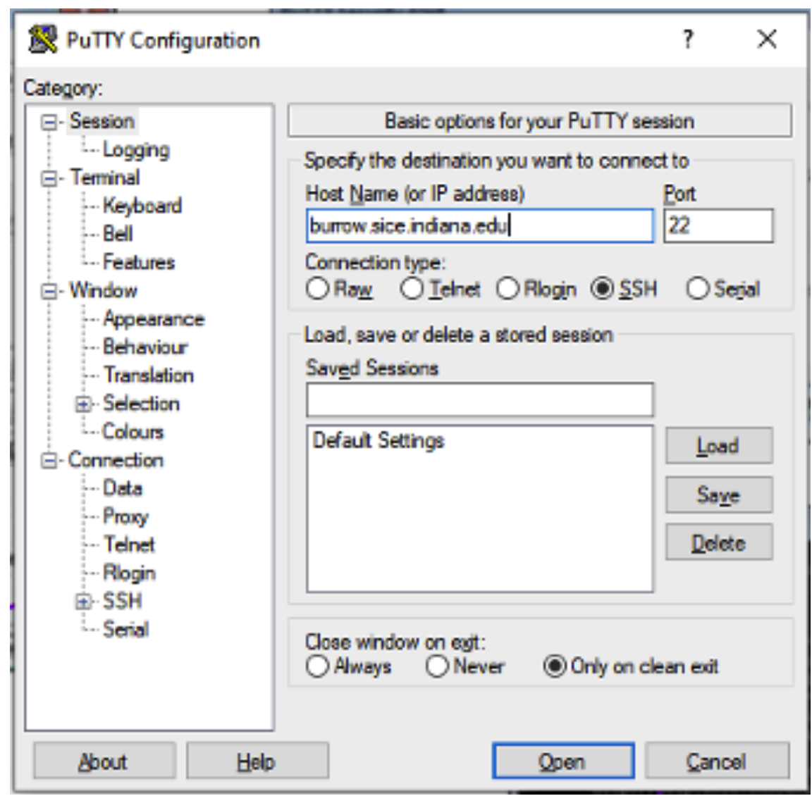
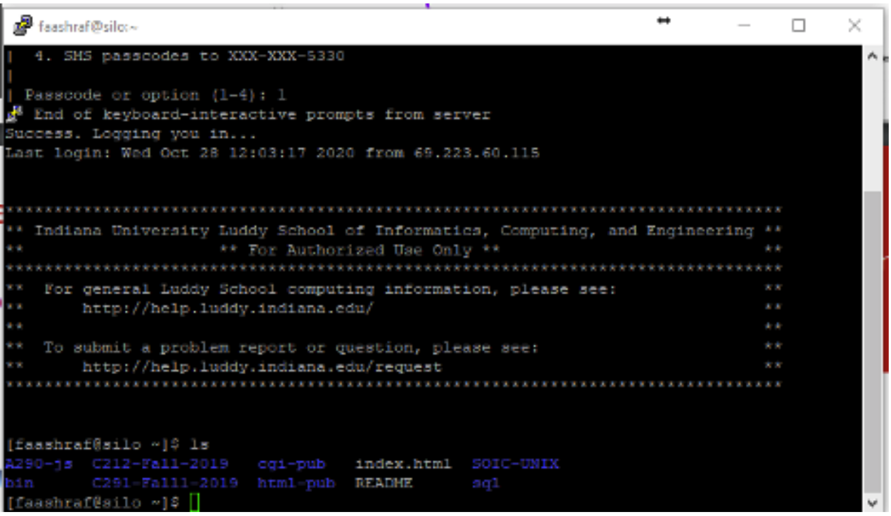

Lesson 7-2
puTTY
The equivalent to Terminal in the Windows world is Command Line, or commonly denoted as CLI. The problem with it is that it does not have a command to interact with a UNIX server, like Terminal. That is where our good friend puTTY comes in to action.
puTTY is a software that is similar in interaction as Terminal and is used to interact with a server. From what I know, you cannot use it on your local machine, but I could be wrong. It too, like Terminal, uses commands to do stuff. This was the way of interacting with a computer in the olden days (the 1980s and earlier, more specifically), but this technique can be useful for a few different things. First, let's figure out how to connect to a server using puTTY.
First Time Setup/Logging In
- Download and install puTTY.
- Upon startup, you will see a bunch of text fields to log in with. The only field to modify here is hostname. Do so by entering your host domain here.
IU Students: silo.luddy.indiana.edu

Figure 7B: This is what the login screen looks like. DO NOT modify any other fields unless specified by an instructor or iT.
- Click Open and then you should be prompted in 2 separate prompts to login. Enter your Username and Password as needed.
IU students, after entering login information, you will have to do Duo Authentication before being able to work on Silo. - That is it. If you have done it all correctly, you should see a screen similar to Figure 7C.  Figure 7C: Every server should have some sort of welcome message. This is the one that IU uses on Silo.
To get back in at any time, repeat the aforementioned steps. Like I said in Chapter 6, 8-3 will have a bunch of useful commands in a cheatsheet for you to reference. You can view 8-3 here. Now let's recap what we've learned on the next page.